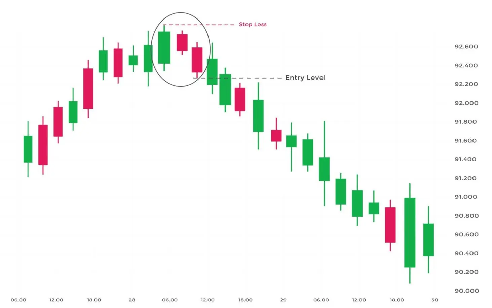

This candlestick pattern occurs after a bullish trend. For example, a single long bullish candle is followed by two slightly smaller bearish candles in this pattern.
When this pattern appears at the top of an uptrend, it signals a bearish reversal, with the asset’s price falling.
| Formation |
Let us discuss how this candlestick pattern is formed-

First, check the candlestick charts for a strong bullish trend. Look for a long bullish candle once you’ve found the bullish trend. The first candle in the three inside down patterns would be this one.
After spotting the lengthy bullish candle, look for a small bearish candle on the charts. Ideally, the second candle should be brief and confined within the first long bullish candle.
The pattern’s initial two candles should resemble a bearish harami. This stage of the pattern is crucial. As a result, only consider entering a trade if the second candle in the pattern meets these requirements.
| What Traders Interpret from a Three Inside Down Pattern? |
As you can see in the chart below, the asset’s price is going upward, indicating the bulls’ firm grasp on the market. The first of the three inside down candlestick patterns closes favourably following the trend. The candle’s body appears long, with the bulls dominating strongly, indicating that the trend will continue.
The pattern’s second candle, on the other hand, begins with a ‘gap down.’ The bulls are utterly thrown off their trend and concerned as a sudden and unexpected down-move occurs in the middle of a strong rise.
Meanwhile, the bears make a powerful entry and seize charge of the session by pushing through the gap down opening.
The purchasing demand has faded by this time, leaving the bears in command. In the third session, the selling pressure increases even more, with the bears continuing to sell. As a result, the pattern’s third and final candle likewise becomes red.
Here’s something important to keep in mind. The third bearish candle must close below the second short bearish candle and the first long bullish candle for the three inside down candlesticks to be effective. So this big downward movement in the third session confirms the bearish trend reversal.
